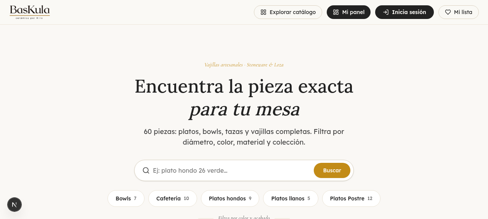
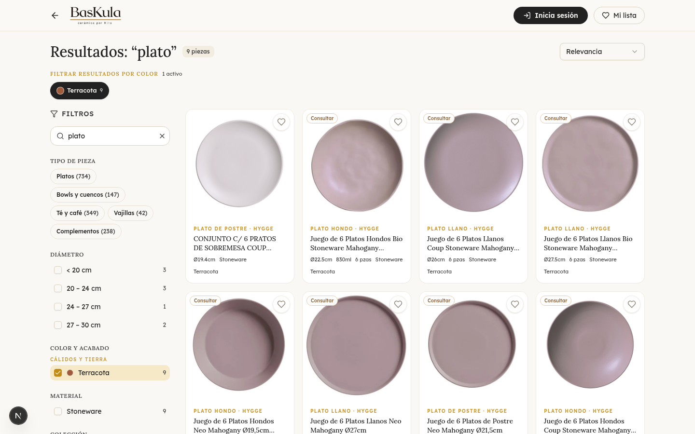
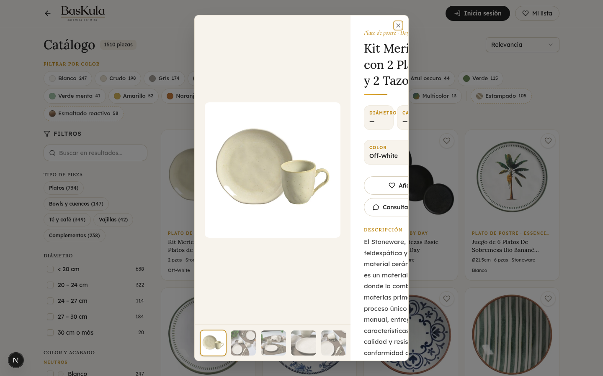
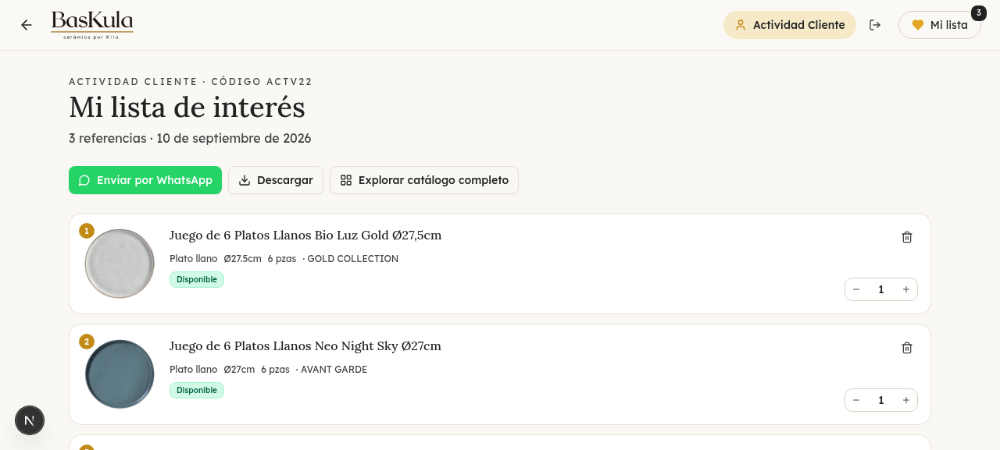
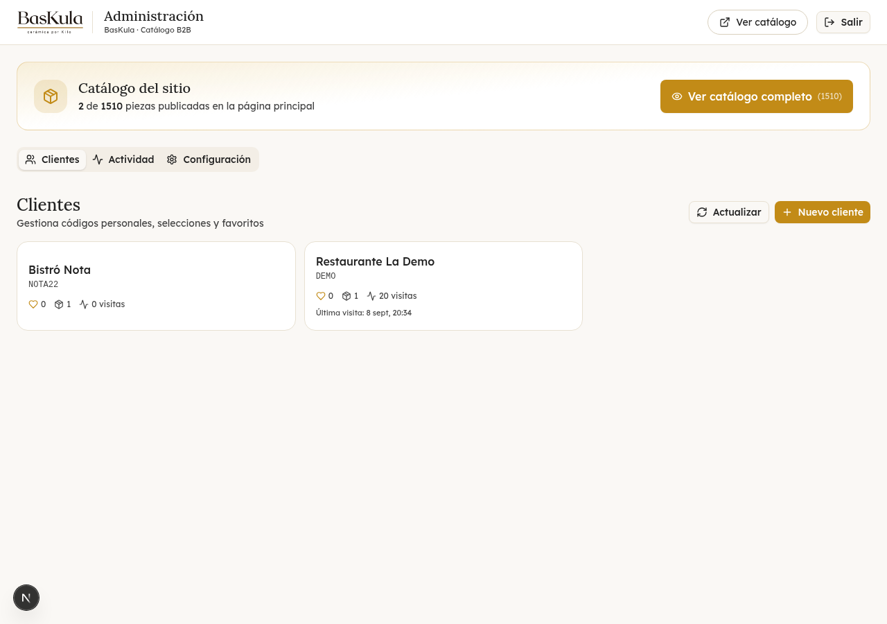
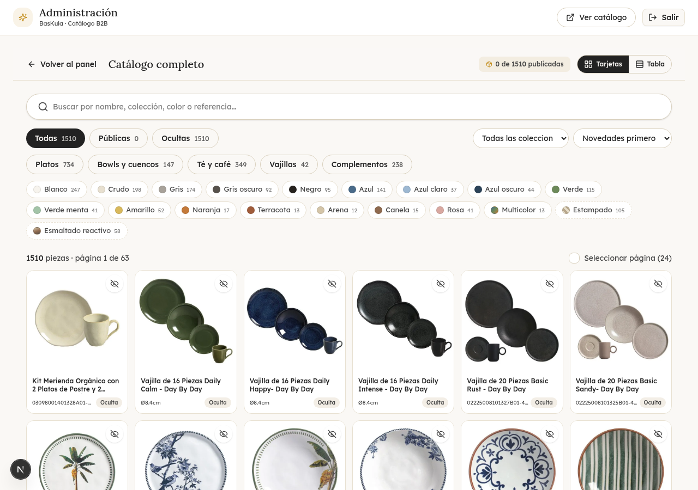
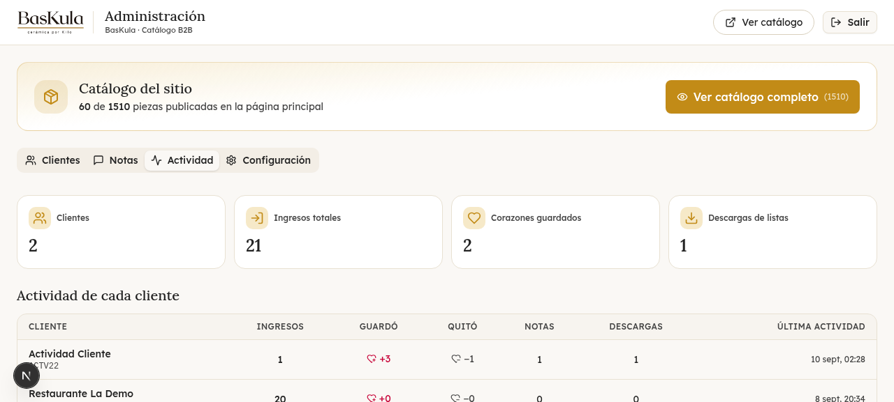
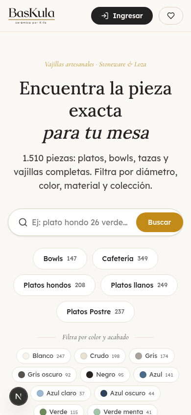

Contenido
Qué contiene este paquete
manual/ — este manual en PDF y su versión HTML editable.
documentacion/ — la misma documentación, capítulo por capítulo, en Markdown.
sitio/ — la herramienta completa: proyecto Next.js con la base de datos SQLite incluida y lista para correr (solo falta ejecutar npm install).
La idea
BasKula — Catálogo privado B2B es la herramienta web del catálogo de vajillas de cerámica de BasKula (Punta Piedras, Uruguay). No es una tienda online: no hay precios, no hay carrito y no hay compras. Es un catálogo de consulta y armado de listas, pensado para la relación comercial entre el dueño y sus clientes gastronómicos: restaurantes, cafeterías, hoteles, casas de banquetes y tiendas del rubro Horeca.
El catálogo contiene 1.510 piezas de vajilla de cerámica (stoneware y loza) organizadas en 16 colecciones, con fichas completas en español: fotografías, dimensiones, capacidad, composición de los sets, descripción, cuidados, datos de empaque y disponibilidad. Sobre ese catálogo funciona un sistema de acceso privado con código por cliente, y un panel de administración para el dueño.
El problema que resuelve
Antes de esta herramienta, el catálogo viajaba como PDFs sueltos por WhatsApp o correo, con planillas desactualizadas y fotos por aquí y por allá. Esa forma de trabajar genera cuatro problemas concretos, y cada uno tiene su respuesta acá.
Falta de control sobre qué ve cada cliente
Cuando todos reciben el mismo PDF, todos ven todo: líneas que aún no se quieren mostrar, piezas discontinuas, códigos del fabricante que exponen el canal de abastecimiento. En la herramienta, la página pública solo muestra lo que el dueño publica, y cada cliente entra con su propio código. Publicar u ocultar una pieza toma un clic y aplica al instante.
Cero seguimiento del interés del cliente
Con un PDF enviado por chat no hay forma de saber si se abrió, qué piezas interesaron ni qué se está pensando pedir. Acá cada acción deja registro: ingresos, piezas guardadas o quitadas, notas enviadas y descargas del PDF de la lista. La próxima conversación comercial arranca informada.
Consultas desordenadas
El catálogo tiene búsqueda instantánea y filtros por categoría, color (19 tonos), diámetro, colección y disponibilidad, con contadores honestos que reflejan el resultado real de cada combinación. El cliente encuentra solo y el asesor responde menos preguntas repetidas.
La lista del cliente era efímera
Quien hojeaba el PDF y anotaba "quiero esto y esto" perdía el hilo al día siguiente. Con la herramienta, el cliente marca piezas con un corazón, ajusta cantidades y su lista queda guardada: la descarga como PDF prolijo o la envía por WhatsApp cuando quiera.
Los cuatro pilares de diseño
- Privado por código. No hay registro público. Cada cliente entra con un código personal que el dueño le entrega (por ejemplo DEMO). El código es la identidad: no necesita contraseña, y el dueño lo crea, edita o desactiva desde el panel.
- Sin precios y sin códigos para el cliente. El cliente nunca ve precios, referencias ni códigos de fabricante: ni en fichas, ni en su lista, ni en el PDF, ni en WhatsApp. La cotización queda en el canal comercial. El dueño sí ve todos los códigos en su panel.
- La lista es del cliente. "Mi lista" junta sus piezas guardadas con cantidades, la selección "Preparado para ti" del asesor y cinco sugerencias automáticas según sus gustos. Se descarga como PDF A4 con la marca y se comparte por WhatsApp en un toque.
- El dueño lo ve todo. Cada acción relevante queda registrada (quién ingresó, qué guardó, qué quitó, qué nota mandó, si descargó su lista). El detalle de cada evento lo construye el servidor, así el registro no se puede falsificar desde el navegador.
Breve historia del proyecto
El catálogo partió de la estructura de productos del proveedor (seis departamentos: platos, stoneware, complementos, conjuntos de té y café, colecciones y vajillas). Durante el desarrollo se estructuraron las 1.510 piezas con especificaciones y fotografías, y se tradujo todo al español: nombres, 1.508 descripciones y 1.507 textos de cuidados. Sobre esos datos se construyó la aplicación, se le aplicó la identidad de marca BasKula (paleta crema, carbón y mostaza; tipografías Lora, Lexend Deca y Cormorant Garamond; logo propio) y se verificó cada flujo con pruebas automatizadas de punta a punta en navegador real, en escritorio y en móvil.
La herramienta se entrega con 60 piezas ya publicadas en la página pública —variadas, disponibles y repartidas entre todas las categorías— para que el sitio se vea vivo desde el primer día, y con el resto del catálogo listo para publicarse desde el panel con un clic.
Vista general: cómo funciona de punta a punta
Los dos roles
El cliente (restaurante, cafetería, hotel, tienda)
Entra con su código por el botón "Inicia sesión", explora el catálogo público, marca piezas con corazones, arma su lista con cantidades, la descarga en PDF o la envía por WhatsApp, y le deja notas al asesor. No ve precios ni códigos, y no puede ver nada que el dueño no haya publicado.
El dueño / asesor (panel de administración)
Entra con la clave del panel (BASKULA2272 de entrega). Decide qué piezas son públicas en la página principal, arma la selección "Preparado para ti" de cada cliente, gestiona cuentas y códigos, lee las notas, y consulta la actividad completa de cada cliente. Ve el catálogo total de 1.510 piezas con referencias y códigos.
El flujo completo, de punta a punta
- El dueño publica. Del total de 1.510 piezas, publica las que quiere mostrar (60 en la entrega). Publicar u ocultar es un clic y se refleja al recargar la página pública.
- El dueño crea al cliente con nombre y un código de acceso simple, y le prepara una selección personal ("Preparado para ti") si corresponde.
- El cliente entra con su código. Su sesión persiste entre visitas.
- El cliente explora: búsqueda, filtros, fichas completas con fotos, medidas, descripción y cuidados.
- El cliente marca corazones y ajusta cantidades: su "Mi lista" se arma sola, junto a las recomendaciones del asesor y cinco sugerencias automáticas según sus gustos.
- El cliente actúa: descarga su lista en PDF (sin precios ni códigos), la envía por WhatsApp, o deja una nota al asesor.
- El dueño observa: la pestaña Actividad registra ingresos, corazones guardados y quitados, notas y descargas de cada cliente. Las notas se atienden desde su pestaña. Las listas compartidas quedan copiadas para cotizar.
La regla de oro: público y oculto
Cada pieza tiene dos estados independientes que gobiernan todo el sistema, y conviene tenerlos claros desde el primer día:
Pública u oculta (la decide el dueño)
Una pieza oculta no existe para el mundo: no aparece en el catálogo, su ficha responde "no encontrada", y desaparece del "Preparado para ti" y de la "Mi lista" de cada cliente. Sin embargo, nada se pierde: los corazones guardados siguen en la base, y al publicar la pieza de nuevo reaparece en todo, incluidas las listas de los clientes que la tenían guardada.
Disponible o "consultar" (dato operativo)
Independiente de su visibilidad, cada pieza puede estar disponible (etiqueta verde) o figurar "Consultar disponibilidad" (etiqueta marrón). La pieza se muestra igual; el estado solo comunica al cliente que conviene confirmar stock antes de decidir. El panel filtra por esta dimensión y avisa antes de añadir una pieza no disponible a un cliente.
Cómo está protegido todo
La seguridad del sistema es simple y efectiva, pensada para este uso comercial. Cada cliente es un código alfanumérico único que el dueño controla (crear, editar, desactivar, eliminar); un cliente desactivado no puede entrar. El panel del dueño se abre con su propia clave alfanumérica (se cambia desde Configuración, no distingue mayúsculas). Las sesiones se mantienen en el propio navegador del usuario (almacenamiento local y cookies de un año para clientes, de siete días para el panel), de modo que nadie más las ve. Y todos los datos viven en la propia base SQLite del sitio: no hay servicios de terceros ni cuentas externas involucradas.
Detalle de robustez que se nota en el uso diario: la identificación funciona incluso en contextos donde el navegador bloquea cookies, porque el código viaja también como cabecera interna en cada petición. Por eso el sitio funciona igual dentro de ventanas embebidas o vistas previas, donde otros sistemas romperían la sesión.
Guía del cliente

1. Entrar con el código
Al abrir el sitio, el cliente toca el botón "Inicia sesión" y escribe su código personal — por ejemplo DEMO. El código no distingue mayúsculas y perdona los errores de tipeo comunes: espacios, tildes y guiones se normalizan automáticamente. Si es válido, la ventana se cierra y el cliente queda identificado: su nombre aparece junto al botón y el sitio le muestra su contenido personalizado.
La sesión persiste: al recargar o volver otro día con el mismo navegador sigue identificado. Para salir, toca su nombre y elige cerrar sesión. Si el código no se reconoce, el aviso es claro ("Código no reconocido. Verificálo o contactá a tu asesor") con acceso directo a WhatsApp. Los clientes que recibieron en su momento un enlace del tipo sitio.com/c/SU-CODIGO siguen entrando por ese enlace: funciona igual que antes.
2. Explorar el catálogo
La página de inicio tiene una barra de búsqueda protagonista: se escribe lo que se busca ("plato hondo", "bowl", "terracota") y el sitio responde al instante, entendiendo también términos de color y de categoría. Debajo hay botones de categoría (Platos, Bowls, Cafetería, Complementos, Vajillas) y chips de color con muestra visual y cantidad de piezas por tono (19 tonos).
En el catálogo aparece el panel de filtros: categoría, color y acabado agrupados por familias, diámetro, colección, material y "solo disponibles". Cada opción muestra su contador honesto: el número que se ve es exactamente el número de resultados al tocarla, incluso con otros filtros ya activos. La grilla pagina de a 24 piezas y cada tarjeta lleva su etiqueta de disponibilidad: "Disponible" (verde) o "Consultar disponibilidad" (marrón).

3. La ficha de la pieza
Tocando una pieza se abre la ficha completa a pantalla casi total: galería de fotos de la pieza e imágenes de ambiente, nombre y tipo, colección, y especificaciones — diámetro, altura, capacidad, piezas del set, color base y acabado. Abajo, la descripción en español, la sección de cuidados (lavar, microondas, horno, congeladora) y los datos técnicos de empaque. El corazón permite guardarla desde la propia ficha, y al final hay piezas similares sugeridas para seguir explorando sin volver a la grilla.

4. Marcar piezas: los corazones
El corazón está siempre visible en la esquina de cada tarjeta y en cada ficha — no aparece solo al pasar el mouse, porque en celulares y tablets no hay mouse. Tocarlo agrega la pieza a "Mi lista" con cantidad 1; el contador del botón "Mi lista" se actualiza al instante y el corazón queda relleno. Tocarlo de nuevo la quita.
5. Mi lista: el panel del cliente

"Mi lista" tiene tres secciones. Arriba, la lista de interés: las piezas guardadas con cantidad ajustable, disponibilidad y botón para quitar. En el medio, "Los recomendados para ti": la selección que el asesor preparó para ese cliente; tocar el corazón de una recomendada la suma a la lista al instante, sin recargar. Abajo, "También te puede gustar": cinco sugerencias automáticas calculadas a partir de los gustos del cliente (colecciones, colores y tipos de las piezas que marcó); mientras no haya marcado ninguna, las sugerencias se apoyan en lo que el asesor le preparó.
6. Descargar el PDF de la lista
El botón "Descargar" genera en el navegador un PDF A4 prolijo: encabezado BasKula con filete mostaza; nombre del cliente, código y fecha; las piezas numeradas con nombre, especificaciones (diámetro, piezas del set, colección), cantidad y disponibilidad; pie con el total de piezas y el aviso "precios por canal comercial"; y paginación si la lista es larga. El archivo se llama mi-lista-baskula-CODIGO-FECHA.pdf. Sin precios y sin códigos de artículo: listo para que el cliente lo use internamente o lo reenvíe a quien necesite. El botón verde de WhatsApp, por su parte, abre la conversación con el asesor con un mensaje ya redactado que incluye la lista completa con cantidades.
7. Notas al asesor
Al final de "Mi lista" hay una tarjeta: "¿Querés decirle algo a tu asesor?". Es texto libre (hasta 2.000 caracteres) para consultar disponibilidad, pedir cotización o comentar plazos y contexto del negocio. Al enviar, la nota queda registrada con fecha y aparece en el historial "Tus notas enviadas". El dueño la lee en su panel y la atiende.
8. Qué no puede ver el cliente
- Precios, códigos de artículo y referencias del fabricante (en ningún lado: ficha, lista, PDF ni WhatsApp).
- Piezas ocultas por el dueño — si se oculta una pieza guardada, desaparece de su lista sin perderse; al publicarse de nuevo, reaparece.
- El catálogo completo de 1.510 piezas: solo lo publicado (60 en la entrega).
- Datos internos de su cuenta: notas privadas del asesor y contadores de actividad.
Guía del dueño: el panel de administración

1. Entrar al panel
Hay dos caminos. Desde el catálogo: botón "Inicia sesión" → escribir la clave del panel (BASKULA2272 de entrega, no distingue mayúsculas) → el sistema detecta que es la clave del dueño y abre directamente el panel. O directo a la dirección /admin del sitio, con el candado de acceso. La sesión sobrevive a la navegación: mientras el dueño tenga sesión activa, el catálogo muestra el botón "Mi panel" en el encabezado para alternar entre panel y catálogo sin volver a ingresar la clave. Para cerrar, botón "Salir" del panel.
2. La pestaña Clientes
La lista de clientes con sus métricas de un vistazo: visitas, favoritos, piezas preparadas, notas pendientes (chip "N notas") y estado activo. Las operaciones disponibles son:
- Crear: nombre (obligatorio), código de acceso (si se deja vacío se genera del nombre), contacto, teléfono y notas internas. El código se normaliza solo: escribir "caf 22" crea el código CAF22.
- Armar "Preparado para ti": buscador de piezas con filtros por categoría y tono, y el interruptor "Solo disponibles". Al añadir una pieza no disponible, un aviso claro ofrece "Agregarlo al cliente de todas formas" o cancelar. Se quita con el tacho y confirmación.
- Ver favoritos del cliente con chips "No pública" si alguna pieza dejó de estar publicada.
- Editar todo, incluido el código (con validación de unicidad y aviso de que la clave anterior deja de funcionar), activar/desactivar y eliminar (borra en cascada favoritos, notas y registros).
3. El catálogo completo y la publicación
El botón "Ver catálogo completo (1.510)" abre la vista de gestión del catálogo total, en dos modos: grilla de tarjetas (24 por página) o tabla compacta (48 por página). Arriba hay pestañas Todas / Públicas / Ocultas, buscador por nombre, chips de categoría, tono y disponibilidad, filtro por colección y cuatro órdenes. Cada pieza muestra su referencia de artículo, dato que solo existe en el panel, nunca del lado del cliente.
Publicar u ocultar se hace de tres maneras: por selección (casillas individuales o "seleccionar página" → barra flotante inferior → Publicar u Ocultar), por pieza (el icono del ojo alterna el estado), o desde la ficha de una pieza oculta, que el dueño siempre puede abrir y que muestra el rótulo "Oculta" y el botón "Publicar ahora". El contador del panel se actualiza al instante y la página pública refleja el cambio en la próxima recarga, sin esperas ni reconstrucciones.

4. La pestaña Notas
Todas las notas de todos los clientes en una sola lista, las más recientes primero, con nombre, código, fecha y mensaje completo. El botón "Ya la atendí" elimina la nota una vez leída y respondida. Es la bandeja de entrada de la relación con los clientes; también pueden atenderse desde el detalle de cada cliente, y el chip "N notas" en la lista de clientes indica cuántas hay pendientes.
5. La pestaña Actividad

La vista del conocimiento comercial. Arranca con cuatro tarjetas de resumen: clientes, ingresos totales, corazones guardados y descargas de PDF. Debajo, la tabla "Actividad de cada cliente" — ingresos, piezas guardadas (+) y quitadas (−), notas, descargas, favoritos actuales y última actividad — donde tocar una fila filtra todo lo demás a ese cliente. Luego, la línea de tiempo "Actividad reciente" con los últimos 150 eventos, con icono y descripción por tipo: ingresó con su código, guardó pieza (con nombre), quitó pieza, envió nota (extracto) o descargó su lista en PDF (con cantidad de referencias). Arriba hay un selector para filtrar por cliente.
Al final permanecen las listas compartidas: cada vez que un cliente comparte su lista por WhatsApp, el panel conserva una copia con las piezas y cantidades de ese momento — la referencia exacta para cotizar lo que el cliente tenía en mente.
6. La pestaña Configuración
- WhatsApp de contacto: el número al que salen los mensajes de los clientes (y un mensaje predeterminado opcional).
- Cambiar la clave del panel: alfanumérica de 4 a 16 caracteres. Recomendación: cambiarla apenas recibir el paquete si la computadora se comparte.
Cómo funciona por dentro
El stack
| Capa | Tecnología | Notas |
|---|---|---|
| Framework | Next.js 16 (App Router) + React 19 | Páginas y API en un solo proyecto |
| Lenguaje | TypeScript estricto | 0 errores de compilación en la entrega |
| Interfaz | Tailwind CSS 4 + shadcn/ui (Radix) | Dialog, AlertDialog, Tabs, Select… accesibles |
| Datos | Prisma 6 + SQLite | Base única db/custom.db (~22 MB), sin motor externo |
| jspdf 4.2 (import dinámico) | El PDF de la lista se genera en el navegador | |
| Fuentes | Lora, Lexend Deca, Cormorant Garamond | Identidad BasKula vía next/font |
La home renderiza en el servidor un shell mínimo y el índice del catálogo se carga por API desde el navegador (arquitectura SPA deliberada): así la búsqueda y los filtros corren en memoria sobre los datos ya descargados, con respuesta instantánea y sin recargas.
El modelo de datos
| Modelo | Qué representa | Puntos clave |
|---|---|---|
| Product | Una pieza (1.510) | ~35 campos: identidad, clasificación (colección, línea, material, tipo, color, tono), medidas, available, published, empaques, textos ES, imágenes JSON |
| Client | Un cliente | code único normalizado, contacto, notas internas, active, visitas |
| Favorite | Un corazón | Par único cliente+pieza, con cantidad |
| ClientNote | Nota al asesor | Texto libre ≤ 2.000 caracteres, con fecha |
| SharedList + ListItem | Lista compartida | Copia del momento de compartir, para cotizar |
| Visit | Evento de actividad | login · fav_add · fav_remove · note · download + detalle |
| CuratedItem | "Preparado para ti" | Por cliente, con orden y nota opcional |
| Setting | Configuración | adminPin · whatsapp · whatsappMessage |
Las relaciones usan borrado en cascada: eliminar un cliente quita sus favoritos, notas, selecciones y eventos. El esquema completo vive en prisma/schema.prisma, comentado en español campo por campo.
Las rutas API
Diecisiete endpoints organizan toda la lógica de servidor. Las rutas de administración validan la clave del panel en cada pedido (cabecera x-admin-pin o cookie de sesión) y responden 401 sin ella.
| Ruta | Función |
|---|---|
| GET /api/catalog | Índice compacto de piezas públicas (sin caché de navegador: publicar se ve al recargar) |
| GET /api/products/[slug] | Ficha completa + 8 sugerencias; pieza oculta → 404 (salvo admin) |
| GET /c/[code] | Enlace legacy: cookie + redirect con bienvenida |
| POST /api/shared-lists | Crea la lista compartible de los favoritos públicos |
| GET /api/client/[code] | Valida el código y registra el ingreso (evento login) |
| GET /api/client/home | Personalización: curados, 5 sugerencias, preview de favoritos |
| GET·POST·DELETE /api/client/favorites | Listar, guardar (rechaza ocultas) y quitar; eventos de actividad |
| GET·POST /api/client/notes | Historial y envío de notas al asesor |
| POST /api/client/logout | Limpia la cookie de cliente |
| POST /api/client/activity | Registra la descarga del PDF; el detalle lo arma el servidor |
| POST·DELETE /api/admin/auth | Validar la clave + cookie de 7 días / cerrar sesión |
| GET /api/admin/catalog | Índice completo de 1.510 con estado de publicación |
| GET·POST·PATCH·DELETE /api/admin/clients | Gestión completa de clientes (crea, edita, desactiva, elimina) |
| GET·POST·DELETE /api/admin/curated | Selección "Preparado para ti" de cada cliente |
| DELETE /api/admin/notes | Elimina una nota atendida |
| GET·POST /api/admin/publish | Publica/oculta por lote (≤ 2.000) e invalida la caché |
| GET·POST /api/admin/settings | Lee y actualiza WhatsApp y la clave del panel |
| GET /api/admin/activity | Actividad completa: eventos, resumen por cliente, listas compartidas |
Identificación robusta
La herramienta está pensada para verse en contextos hostiles a las cookies (ventanas embebidas, vistas previas), así que cada identidad tiene doble vía. El cliente guarda su código en el almacenamiento local del navegador y este viaja como cabecera interna en cada petición; la cookie funciona como respaldo. El dueño hace lo mismo con la clave del panel. El servidor acepta cualquiera de las dos vías, y los códigos se normalizan igual en formulario y servidor ("caf 22", "Café 22" y CAF22 son el mismo código).
Los eventos de actividad se blindan contra falsificación: el detalle de cada evento lo construye el servidor consultando la base (por ejemplo, la descarga del PDF cuenta los favoritos reales). Y el diseño es tolerante a fallos: si el registro de una visita o el cálculo de sugerencias falla, el login del cliente no se rompe — las métricas son best-effort por diseño.
Rendimiento
- Caché de servidor de 5 minutos para el índice público y el completo; se invalida al publicar u ocultar, así el cambio es inmediato.
- Ficha de producto rápida: caché en el navegador + precarga al pasar el mouse + esqueleto estructural. Primera apertura ~0,8 s; siguientes ~0,17 s.
- Búsqueda y filtros en memoria: cero llamadas extra al servidor por cada tecleo.
El motor de sugerencias
Dos motores complementarios. "También te puede gustar" parte de todos los corazones del cliente (hasta 60; si no hay, de su selección curada) y puntúa el catálogo público: misma colección +3, mismo grupo de color +2, mismo tipo +2, diámetro a ±2 cm +1; descarta lo ya guardado y lo que puntúa menos de 3; muestra 5. "Piezas similares" en la ficha puntúa igual más línea y grupo, con tope de 2 por combinación de colección y color para dar variedad, y muestra 8.
Responsive

La interfaz fue verificada en escritorio (1280×900) y móvil (390×844): filtros en panel deslizante, ficha al 97% del ancho, corazones y tachos siempre visibles con área táctil generosa, y etiquetas de accesibilidad en los controles de icono. El panel de administración también es operativo desde el celular.
Los datos incluidos y el estado actual
Origen del catálogo
Las 1.510 piezas provienen de la estructura de catálogo del proveedor de cerámica (plataforma VTEX, seis departamentos). Durante el desarrollo se ejecutó un pipeline propio: descarga estructurada vía API con imágenes redimensionadas y especificaciones extraídas de las tablas técnicas; traducción al español de nombres, 822 descripciones únicas y cuidados (resultado: 1.508 piezas con descripción y 1.507 con cuidados); taxonomía de 19 tonos de color con inferencia para piezas sin especificar; y rebranding completo de 2.528 textos a la voz BasKula. El dataset consolidado se incluye en el paquete (sitio/scripts/dataset_final.json) para poder re-sembrar la base cuando se quiera.
Cifras de entrega
| Dato | Valor |
|---|---|
| Piezas totales en la base | 1.510 (todas con imágenes) |
| Piezas disponibles | 717 (793 "consultar disponibilidad") |
| Piezas publicadas en la web pública | 60 — platos 27 · complementos 13 · té/café 10 · bowls 7 · vajillas 3 |
| Colecciones / tonos de color | 16 / 19 |
| Clientes | 1 — DEMO (Restaurante La Demo), 20 ingresos |
| Selección curada / listas compartidas | 1 / 1 (demostración) |
| Favoritos / notas | 0 / 0 (base limpia) |
| Clave del panel / WhatsApp | BASKULA2272 / +598 93 658 477 |
Las 60 piezas publicadas fueron elegidas con criterio curado: todas disponibles y con imagen, repartidas proporcionalmente entre los grupos y alternando colecciones dentro de cada uno, mediante el script scripts/publish_batch.mjs, que queda disponible para repetir la operatoria con otros lotes.
La base de datos del paquete
La entrega incluye sitio/db/custom.db (SQLite, ~22 MB) con el estado exacto descrito. Es un solo archivo: copiarlo es un backup completo — clientes, corazones, notas, actividad y configuración. No requiere motor externo, usuarios ni contraseñas de base: funciona con el archivo tal cual está. Para re-sembrar el catálogo desde el dataset: crear el esquema (npx prisma db push) y correr scripts/seed.ts; el seed es re-ejecutable (actualiza, no duplica).
Instalación y puesta en marcha
Requisitos
Node.js 20 o superior (probado con Node 24) y unos 2 GB libres de disco para las dependencias. Internet solo hace falta para la primera instalación y para las fuentes tipográficas de Google, que el navegador cachea; el catálogo en sí funciona en la red local una vez instalado. Las fotografías de las piezas se sirven desde el CDN del proveedor, así que se benefician de conexión, igual que en el sitio en producción.
Puesta en marcha local
- Abrir una terminal en la carpeta sitio/ del paquete.
- npm install — descarga las dependencias (2 a 4 minutos la primera vez; regenera node_modules a partir del package-lock incluido).
- npx prisma generate — genera el cliente de base de datos (normalmente ya corre solo durante el install).
- npm run dev — abre el sitio en desarrollo, en http://localhost:3000.
Para modo producción local: npm run build y luego npm start (el comando sirve el build autónomo; usa bun en el paquete original — puede cambiarse la línea "start" del package.json a node .next/standalone/server.js para Node puro, o desplegarse en cualquier hosting Node). En desarrollo no hay que tocar nada.
La base de datos y el .env
El archivo .env ya viene portátil: DATABASE_URL="file:../db/custom.db", ruta relativa al esquema de Prisma, de modo que funciona en cualquier carpeta donde se descomprima el paquete. Para apuntar a otra base (por ejemplo una copia de prueba) se edita esa línea con la ruta que sea y se reinicia el servidor. El backup de todo el sistema es copiar sitio/db/custom.db.
Scripts incluidos
| Script | Para qué sirve |
|---|---|
| scripts/seed.ts | Re-sembrar o actualizar el catálogo desde dataset_final.json (re-ejecutable) |
| scripts/publish_batch.mjs | Publicar un lote curado de ~60 piezas variadas, disponibles y con imagen |
| scripts/update_admin_pin.ts | Cambiar la clave del panel desde consola (o desde Configuración, lo recomendado) |
Personalización habitual
- Textos de la interfaz: viven en los componentes de src/components/; editar y guardar, el servidor de desarrollo refleja el cambio al instante.
- Marca y colores: src/app/globals.css (variables de color) y los logos de public/.
- WhatsApp y clave del panel: pestaña Configuración del panel (se guardan en la base, no en el código).
- Título y descripción del sitio: src/app/layout.tsx.
Ponerlo en internet
La herramienta es una aplicación Node estándar con una base de archivo, así que el despliegue más simple es un VPS o hosting Node: subir la carpeta sitio/ completa (incluida la base), instalar, compilar y servir el build detrás de un proxy con HTTPS (se incluye un Caddyfile de ejemplo; Caddy gestiona el certificado solo). El panel ya viene configurado para no aparecer en buscadores. Para dormir tranquilo, un copiado nocturno de la base con una tarea programada alcanza como estrategia de backup. Para este volumen de datos, SQLite es más que suficiente y evita el costo y la complejidad de bases externas; si el proyecto creciera mucho, el mismo esquema Prisma migra a PostgreSQL cambiando el proveedor y la URL de conexión.
Preguntas frecuentes
Chequeo rápido de 2 minutos
Después de instalar, esta secuencia cubre el sistema entero y confirma que todo quedó funcionando. Si cada paso da lo esperado, la herramienta está operativa de punta a punta.
- En la home anónima, buscar "platos llanos" y ver aparecer los resultados al instante.
- "Inicia sesión" con DEMO: el chip del cliente queda visible y aparece "Preparado para ti".
- Marcar un corazón en cualquier pieza, entrar a "Mi lista" y descargar el PDF.
- Entrar con BASKULA2272: el panel muestra "60 de 1.510 piezas publicadas".
- En la pestaña Actividad, ver los eventos recientes de los pasos anteriores: ingreso, pieza guardada y descarga.